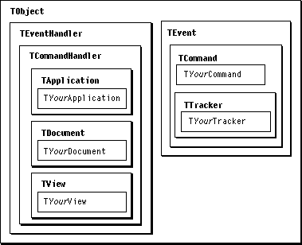

Legacy Document
Important: The information in this document is obsolete and should not be used for new development.
Important: The information in this document is obsolete and should not be used for new development.


Overview
MacApp'sTObjectclass provides basic services that are needed by most objects. Most of the classes in the MacApp class library descend fromTObject, as do most of the classes in a typical MacApp application.The
TObjectclass defines a minimum of instance variables. It provides methods to
This chapter describes how you define subclasses of
- supply information about the object's class hierarchy
- support dependency relationships involving the object
- support a simple cloning mechanism to create a copy of the object
- write the object's data to a stream or read it from a stream
TObjectand other MacApp classes and how you instantiate objects.Choosing an Object Class
Your application creates objects based on classes defined by MacApp and on classes you define. Figure 10-1 shows the MacApp classes your application is most likely to create subclasses for. Many of the objects you create fall into one of these categories:
Figure 10-1 Classes defined by most MacApp applications
- Application. A program created with MacApp has a single global application object, declared in the file
UApplication.cp:
TApplication* gApplication;MacApp's
TApplicationclass descends fromTVUApplication, which supplies support for automated testing.TApplicationprovides many basic application functions, while theTMailingApplicationsubclass adds support for PowerTalk mailers. You define a subclass of one of these classes to implement your application's specific operations.- Documents. An application uses documents to store data and to create views to display that data. MacApp supplies a base class,
TDocument, with specialized subclasses includingTFileBasedDocument,TEditionDocument, andTMailableDocument. You define one or more document subclasses to store and display your application's data.

The MacApp Class and Method Reference lists all the classes and methods provided by MacApp.
- Commands. An application uses commands to respond to user actions and to perform operations. MacApp supplies the
TCommandclass and a number of specialized subclasses to perform actions that can be done, undone, and redone. TheTCommandclass supports sending an Apple event that describes the command action; sending an Apple event makes the action recordable and allows an attached script to handle the action.You define subclasses of MacApp's command classes to perform your application's specific operations. For example, you define a subclass of the
TTrackercommand to draw, select, or drag objects in a window.- Views. In a MacApp application, each window on the screen is represented as a hierarchy of view objects. Each view object is based on a subclass of MacApp's
TViewclass. MacApp supplies view classes to represent a window and its controls (TWindowandTControl), as well as items such as dialog buttons, text entry fields, and scrolling lists (TButton,TEditText, andTTextListView).You define subclasses of MacApp's view classes to display your application's specific data in the window's content area.
Creating Objects
Every MacApp application creates objects and initializes them, then deletes and frees them when they are no longer needed. MacApp provides a mechanism for creating an object safely and ensuring that the object is freed correctly. This mechanism is described in detail in "Initializing and Freeing Objects," beginning on page 36, and in "Creating and Deleting Objects," beginning on page 38.Providing Runtime Type Information for a Class
MacApp provides a number of macro definitions to helpTObject(and your classes based onTObject) supply dynamic information about an object's class hierarchy. This information is known as runtime type information, or RTTI, and is described in detail in Chapter 2, "Basic Operations." Chapter 2 lists the reasons a particular class may need RTTI.The recipes that follow describe how to define classes, and how to instantiate, initialize, and free objects based on those classes. Although the recipes show how to include RTTI, some classes you define may not require it.